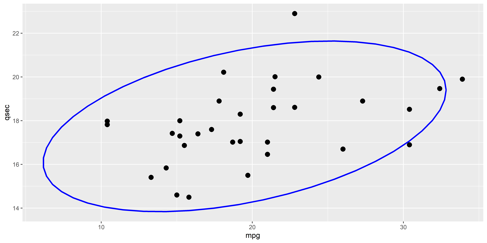

BayesFactor::correlationBF(mtcars$mpg, mtcars$qsec)Bayes factor analysis
--------------
[1] Alt., r=0.333 : 4.416463 ±0%
Against denominator:
Null, rho = 0
---
Bayes factor type: BFcorrelation, Jeffreys-beta*ggplot(mtcars, aes(x = mpg, y = qsec)) +
geom_point(size=3) +
stat_ellipse(color="blue", linewidth=1)